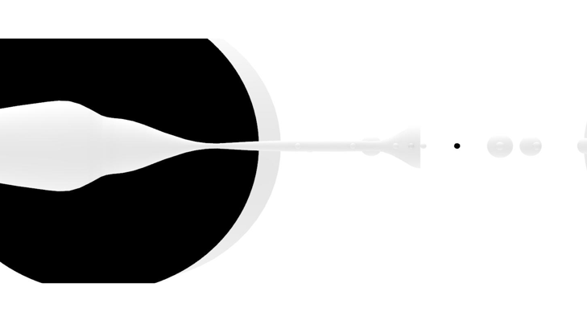

Post-Humanitarian Infrastructure
We see weaponized computational structure in humanitarian system planning and mapping. By interpreting governmental construction of identity-based zoning, we counter the extractivist surveillance of the current state with decentralized community building through experimental governance through visceral creations, anthropological investigations, and tech tools as decoding methods.
Agile Aesthetics Beyond Stacks
Mapping the Financial Relational Layer: Beyond the stacks, we navigate the friction between infrastructure and human labor. We prioritize visceral data—memory, tears, and organic rhythms—to bypass the financialized direction of institutional governance.
Decentralize Professionalism
ETE decodes the "professionality" of data used by elites to maintain opacity. By asserting Open Source Agency over planetary infrastructure, we transform hidden complexities into accessible co-creation tools.
International Sky Hub
In the context of Chinese low altitude economy, and US UFO file releasing, we utilize ariel developmental and UFO investigative aesthetics to mask subversive infrastructural movements. Decentralized drone aid bypasses browser-based agency loss in new sky era.


